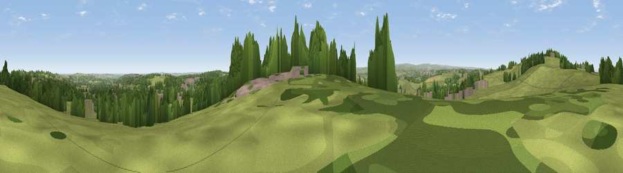

Viewpoint near Greencroft
#13405 in England · top 27% of its area beats it · near GreencroftWhere it is
The exact computed spot (NZ 15725 51925). Click the marker for map links.
The view, rendered

A 360° render of this exact spot computed from the terrain model, tree cover and land cover — summer colours, afternoon light, calibrated against photographs of famous viewpoints. Real trees, hedges and buildings will differ in detail.
The panorama
Grey silhouette: terrain skyline in each direction (720 bearings, Earth curvature and refraction included). Dashed green: skyline with trees (+15 m) and buildings (+8 m) as obstacles. Blue strip: how far the ground is visible on each bearing.
Where the view opens
Wedge length = distance to the farthest visible ground on that bearing (vegetation-aware). Rings at 10, 25 and 50 km.
What fills the view
64% grassland · 22% woodland · 11% built-up · 3% cropland
Angular shares of the visible panorama (visual magnitude), not map area. Landscape diversity 0.43 (0–1 Shannon).
Key numbers
More beautiful places nearby
The staircase of upgrades: each row has a higher view potential than everything closer. Driving times are estimates from straight-line distance, calibrated against real road routing — check an actual route before setting out.
| Place | Direction | Drive | Score |
|---|---|---|---|
| Pontop Pike | NW · 1 km | ~3 min | 77.8 |
| Viewpoint near Rothbury | NNW · 48 km | ~69 min | 81.1 |
| Dove Crag | NNW · 48 km | ~69 min | 82.3 |
| Viewpoint near Lazenby | SE · 53 km | ~74 min | 86.4 |
| Warsett Hill | ESE · 61 km | ~84 min | 86.8 |
| Viewpoint near Easington | ESE · 67 km | ~90 min | 90.2 |
| The Knoll | S · 468 km | ~434 min | 91.0 |
54.86187, -1.75655 · source: screening · position refined by local search. Computed location — check access rights before visiting.